| For quite some time, Eric had wanted to add a
dog to our existing zoo of 3 cats. I had a lot of hesitation, but I
had great memories of our pet dogs when I was young so I secretly wanted a
dog too. I finally broke down in February and we adopted Buddy from
The Bella Foundation. His foster mother LaLisa was a huge blessing
to us with the patient help and advice she gave to us as we adjusted to
having an indoor dog for the first time in our lives. It was a BIG
adjustment! But, he's worth it. |
|
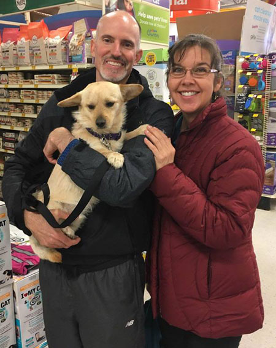 |
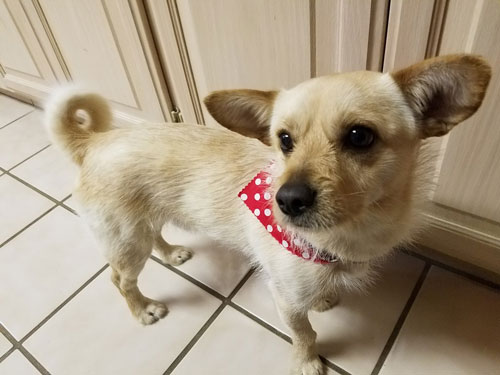 |
| Here we are at The Bella Foundation adoption event at a local PetSmart, getting Buddy. | After his first visit to the groomer. The bandana did not last. Notice his curly-Q tail? It is cute! |
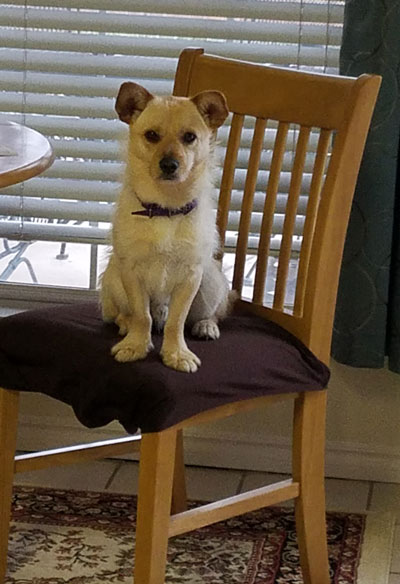 |
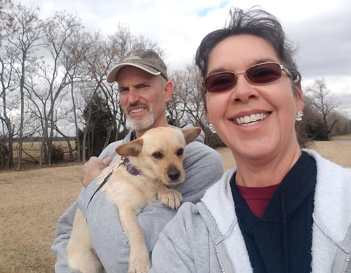 On our first walk with him, we chose a route that's 2 miles long. He made it 1 mile before opting to have Eric carry him the rest of the way home. I'm happy to report that his stamina has greatly improved since then, now
he can run |
| Making himself at home. | |
|
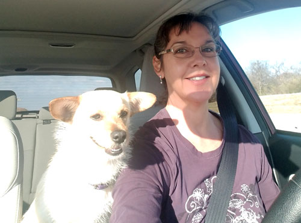 |
|
| Eric, enjoying his new puppy. Each day when Eric comes home, Buddy
gets so happy that he loses his mind for a few minutes. It is quite the greeting. |
He accompanies me on my errands on most days. He's a regular at the
post office! |
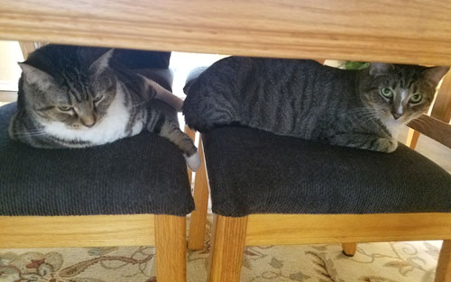 This sums up how the cats feel about this new addition to the family. They are not pleased. |
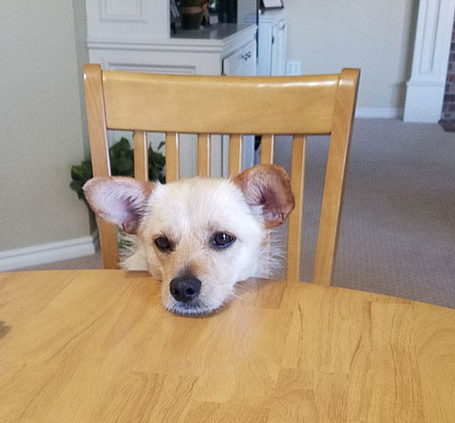 |
| You have a ham sammich and I have no ham sammich... | |
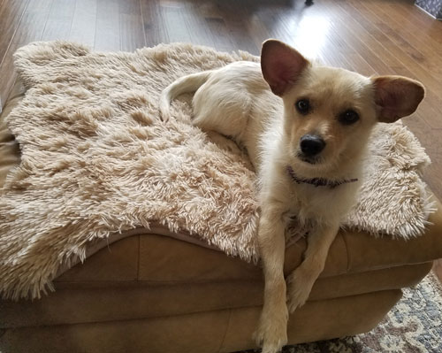 I was having trouble doing my job because he always wanted to sit in my
lap. Then I |
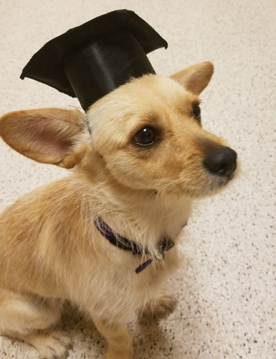 |
| He & I did basic obedience training this spring. He was the only
dog who hung in there until the end, so he graduated at the top of his class! |
|
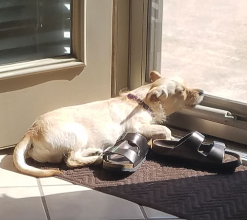 |
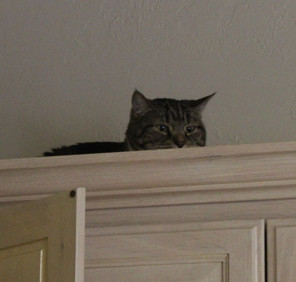 |
| Sleeping in the sun next to Mom's stinky shoes. Does it get better than that? I doubt it. | Lily was terrified for the first 3 months. She mostly lived in the
guest room or on top of the kitchen cabinets. She is less afraid now, but still does not like him. |
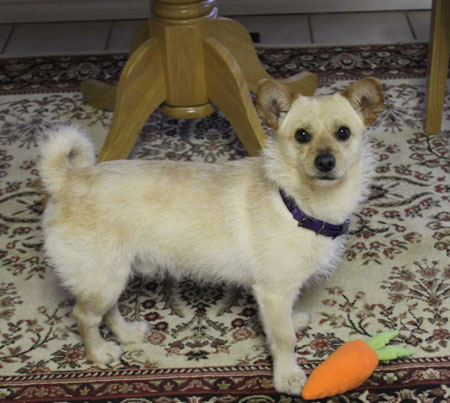 |
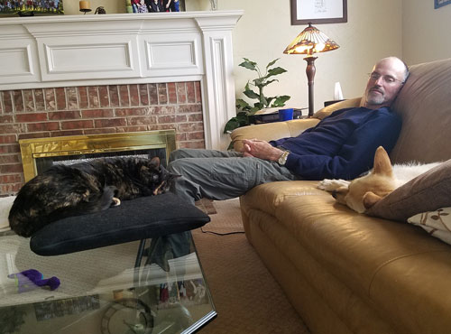 |
| In the winter he had this ruff around his neck that was almost like a lion's
mane. It went away when he lost his winter coat. We had thought about dyeing it purple! |
The first time one of the cats was willing to nap in his general vicinity.
Feisty is adjusting to him better than the two gray cats. |
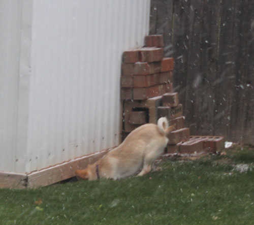 He has discovered that rabbits live under our shed, so even a rare
snowy day couldn't |
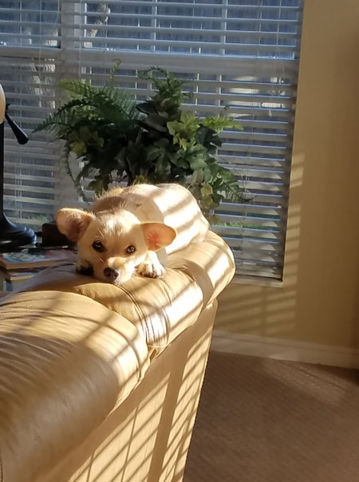 |
| He likes to sleep in this sunny spot in the mornings because he can
watch me in the kitchen from there, while still having a prime sleeping location. |
|
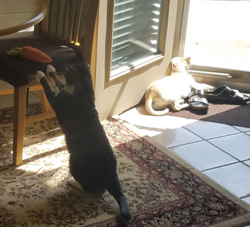 |
|
| Lily takes advantage of Buddy's nap to get a sniff at one of his toys. | |